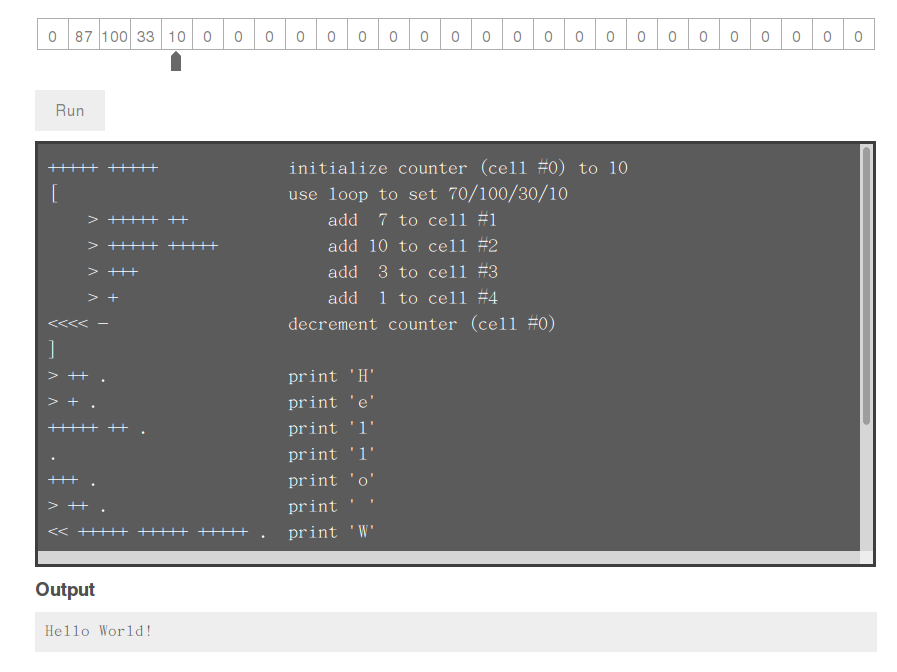

Brainfuck 是一個只具有 8 個指令的神奇語言，其程式碼如其名，以各程式 語言都會實作的 Hello World! 為例，其程式碼長的像這樣:
++++++++++[>+++++++>++++++++++>+++>+<<<<-]>++.>+.+++++++..+++.>++.<<+++++++++++++++.>.+++.------.--------.>+.>.
有沒有開始覺得頭腦很 X 呢？這就是 Brainfuck 語言，由於 fuck 在英文為不雅字， 有些人會用 Brainf**k 或是 bf 來替代。
Brainfuck 起始於 1993 年，由 Urban MÜller 所設計，最初設計的目標為能 夠做出一個極為簡單，並且符合 Turing complete 的程式語言，由於這個語 言設計非常為精巧，且僅有 8 個命令，很常被用於 Compiler 的教材，幾乎所有程 式語言都具有 Brainfuck 的直譯器實現，甚至還有團隊在比賽誰設計的 Brainfuck 直譯器能夠以最短的速度執行完 Brainfuck 程式。
Brainfuck 語言指令與含義
Brainfuck 共包含有八種指令，其中兩個是 I/O 動作，其他的部份則是對記 憶體區塊的讀取/修改，以 C 語言的觀點來看，BrainFuck 就等於是指標 的運作，下表列出了其指令與含義。
| 指令 | 對應的 C 語言 | 含義 |
|---|---|---|
| > | ++ptr; | 指標加一 |
| < | - -ptr; | 指標減一 |
| + | ++(*ptr); | 指標指向的位元組其值加一 |
| - | - -(*ptr); | 指標指向的位元組其值減一 |
| . | putchar(*ptr); | 輸出指標指向的位元組內容 (ASCII 碼) |
| , | *ptr = getchar(); | 輸入內容到指標指向的位元組 (ASCII 碼) |
| [ | while (*ptr) { | 如果指標指向的位元組其值為零，向後跳轉到對應的 ] 指令的次一指令處 |
| ] | } | 如果指標指向的位元組其值不為零，向前跳轉到對應的 ] 指令的次一指令處 |
以上面的 Brainfuck vs. C 的對應表來看，我們可以將左邊的 Brainfuck 語言轉 換成右邊的 C 語言。
Brainfuck
+++++ [ - ]
C
*p += 5; while(0 != *p) { *p--; }
若還是無法理解，沒關係，在 GitHub 上面有一個 Brainfuck Visualizer， 你可以透過他來了解 Brainfuck 的每一個動作。

使用 ClojureScript 來實作 Brainfuck 直譯器
那要怎樣開始呢？首先要先釐清一個觀念: Clojure 裏面的數據結構是不可變的 (immutable) ，也就是說，傳送給函式的參數，並不會被該函式修改，或是 你用 def 宣告的變數，你並不能直接修改其內容。這樣的設計最大的好處，就 是在多線程的環境下，不會因為有變數被修改，而必須鎖住該線程的狀況。
既然如此，在進行 並發 (concurrency, 或稱做 共時同做) 的情況下，對 於可變狀態 (mutable states) 要怎樣管理呢？在大多數的程式語言裡，會使 用鎖 (lock) 的方式來保護正在被修改的資料，Clojure 則是提供了以下四種 模型來處理這種狀況:
| 名稱 | 協做 / 獨立 | 同步 / 異步 | 說明 |
|---|---|---|---|
| Ref | 協做 | 同步 | 為不可變的對象創照一個可變的引用。 |
| Atomic | 獨立 | 同步 | Atom 是比 Ref 更輕量級的機制。多個 ref 的更新操作必須在事務被協調的執行， |
| 而 Atom 允許非協調的單一值更新操作。 | |||
| Agent | 獨立 | 異步 | 更新操作將在另外一個線程 (thread) 被執行 |
| Vars | 協做 | 同步 | Vars 是透過 def 或是 defn 加上 ^:dynamic 進行修飾，可以使用 binding 在本地線程中來修改他。 |
由於 Clojure 的並發管理機制並非一言兩語可以解釋的，若您對 Clojure 的並發機 制有興趣，可以看看 Clojure 的作者 Rich Hickey 在 Youtube 上的演講 Clojure Concurrency - Rich Hickey 。
在 ClojureScript 中，以上提到的四個類型我們只有 Atomic 這種模型可 以使用，或許你會問，在單線程的 javascript 中使用 Immutability 的機制 是否有意義，在 javascript 中，程式是以異步(aync) 的方式來進行，若你的 變數是不可變的情況，你不需要擔心你的變數會因為什麼情況而被動到。
另外一個儘可能使用 Clojure 提供的數據類型的理由，則是若數據類型保持一 致，則某天若需要讓你的程式跑在 JVM 上 (或是其他 Clojure 可以執行的環境)， 你基本上是不需要修改你的程式的，這個部份，我們會在後面提到如何將本文 的程式修改為 Clojure 可以使用的版本。
[註]: 傳統的 Lisp 允許使用者改變數據結構，Clojure 這樣的設計則讓其更 偏向了函數式程式語言 (Functional Programming)。
概覽整個程式碼
本篇文章完整的程式碼如下，我們將在後面進行說明:
(ns cljs-brainfuck.core (:require [cljs.nodejs :as nodejs] [clojure.string :as str])) (defn read-input [cell cells] (let [syncprompt (nodejs/require "syncprompt") p (syncprompt)] (reset! cells (assoc @cells @cell (.charCodeAt (.trim (.toString p)) 0))))) (defn bf-loop [direction pointer commands] (let [val (if (= direction :forward) 1 -1)] (loop [count 1] (when-not (= count 0) (reset! pointer (+ @pointer val)) (case (nth commands @pointer) \[ (recur (+ count val)) \] (recur (- count val)) (recur count)))))) (defn exec-command [cell cells commands pointer] (case (nth commands @pointer) \> (swap! cell inc) \< (swap! cell dec) \+ (reset! cells (assoc @cells @cell (inc (get @cells @cell)))) \- (reset! cells (assoc @cells @cell (dec (get @cells @cell)))) \. (print (char (get @cells @cell))) \, (read-input cell cells) \[ (if (= (get @cells @cell) 0) (bf-loop :forward pointer commands)) \] (if-not (= (get @cells @cell) 0) (bf-loop :backward pointer commands)) ())) (defn interpret [commands] (let [cell (atom 0) cells (atom (vec (repeat 30000 0)))] (loop [pointer (atom 0)] (exec-command cell cells commands pointer) (swap! pointer inc) (if-not (= @pointer (count commands)) (recur pointer))))) (defn -main [& args] (let [arg1 (nth args 0) fs (nodejs/require "fs")] (if arg1 (.readFile fs arg1 "utf8" (fn [err data] (if err (println err) (interpret (str/trim-newline data))))) (println "Error: Please specify filename.")))) (set! *main-cli-fn* -main)
透過 node.js 對檔案進行讀取
我們希望寫出來的 Brainfuck 直譯器可以自由的讀取 Brainfuck 程式檔案來運 作，因此整個程式就設計成使用 node.js 的方案， 在 node.js 中，可以使用 fs 這個函式庫來對檔案進行操作，其 javascript 讀取檔案的格式如下:
fs = require('fs'); fs.readFile(file, [encoding], [callback]);
因此在 ClojureScript 中，我們要讀取傳送給程式的檔案的話，可以這樣子 來讀取並顯示檔案的內容
(ns cljs-brainfuck.core (:require [cljs.nodejs :as nodejs])) (def fs (nodejs/require "fs")) (defn -main [& args] (let [arg1 (nth args 0)] (if arg1 (.readFile fs arg1 "utf8" (fn [err data] (println (or err data)))) (println "Error: Please specify filename.") ))) (set! *main-cli-fn* -main)
動手寫 Brainfuck 直譯器
我們先從程式的進入點開始著手，首先，當我們讀取完 Brainfuck 的程式碼後， 要將資料傳送給我們的直譯器 (interpreter)，這邊的呼叫就像下面這個樣子。
(interpret "+++++++[>+++++<<<<]---.--")
因此我們的 interpret 雛型就出來了
(defn interpret [commands] (let [cell (atom 0) cells (atom (vec (repeat 30000 0)))] ;; other stuffs ))
在我們的 interpret 雛型裏面，cell 代表的是目前指標指向的單元，而 cells 則是整個 Brainfuck 程式的記憶體欄位，記憶體大小設定為 30000， 即共有 30000 個 cell 的陣列。(這個數值會影響到程式的初始化時間，數 值愈大則程式則需使用更多時間和作業系統要記憶體資源)。
接著，我們要一個一個執行 Brainfuck 的命令，所以會需要一個迴圈，每執行 一次，就執行負責解析 Brainfuck 命令的 exec-command 函式，當指標指 向的位置為命令的尾巴時，才結束迴圈。此部份可以這樣寫 (寫在 interpret 裡面)
(loop [pointer (atom 0)] (exec-command cell cells commands pointer) (swap! pointer inc) (if-not (= @pointer (count commands)) (recur pointer)))
在上面的程式碼部份，exec-command 的部份還沒有被撰寫，這個函式用來根 據 Brainfuck 程式的指令執行相對應的命令，由於每個指令都是一個字元，我們 可以直接使用 case 來擷取指令並執行相對應的程式，整個 exec-command 的 程式如下。
(defn exec-command [cell cells commands pointer] (case (nth commands @pointer) \> (swap! cell inc) \< (swap! cell dec) \+ (reset! cells (assoc @cells @cell (inc (get @cells @cell)))) \- (reset! cells (assoc @cells @cell (dec (get @cells @cell)))) \. (print (char (get @cells @cell))) \, (read-input cell cells) \[ (if (= (get @cells @cell) 0) (bf-loop :forward pointer commands)) \] (if-not (= (get @cells @cell) 0) (bf-loop :backward pointer commands)) ()))
由於 Brainfuck 指令基本上是兩兩成對的，我們可以分開來看他的功能
指標的加減
前面說到了 cell 代表當前指標指向的單元，由於 cell 是 Atomic 類型 的數據，我們要修改其值的話可以使用 swap! 或是 reset! 來進行修改。
\> (swap! cell inc) \< (swap! cell dec)
對指標指向的位元其值加減
我們設定 cells 代表 Brainfuck 程式的記憶體，而 cells 實際上內容為 vector ，若我們要取得 cells 的某個部份的值，則使用 get 就可以取得
(get @cells @cell)
那要怎樣將修改 cells 裏面的數值呢？對於 Atomic 數據類型可以使 用 reset! 來設定其值，假如我們宣告一個叫作 c1 的 vector，其陣列 大小為 3，則我們可以用 reset! 來修改他的數據。
(def c1 (atom (vector (repeat 3 0)))) ; => [0 0 0] (reset! c1 [1 2 3]) ; => [1 2 3]
因此，最後這整部份的程式就像下面這樣
\+ (reset! cells (assoc @cells @cell (inc (get @cells @cell)))) \- (reset! cells (assoc @cells @cell (dec (get @cells @cell))))
輸出/入指標指向的單元內容
這兩個是屬於 I/O 部份的命令，取得指標指向的單元內容的方法已在前面描 述過了，因此不再額外解釋。
\. (print (char (get @cells @cell))) \, (read-input cell cells)
至於讀取使用者輸入的部份，個人認為是這整個程式裏面最麻煩的地方。怎麼 說呢？node.js 設計成異步運作 (async) 的程式，你要他停下來等使用者 輸入是很困難的 (和原本的設計目的不相符和) 。
試過了非常多的方式，包含 node.js 的 readline 模組 ，使用在 ClojureScript 裏面都還是會有問題，正當我要放棄這項功能時 (並且停 筆這篇文章時)，剛好看到 GitHub 上面有 syncprompt 模組，拿來試試 也符合我的需求，於是整個程式完成了，這篇文章也就能發表出來了，可喜可賀。
因此我們的讀取使用者輸入方式就使用了 syncprompt 模組提供的方法， 讀取完使用者的輸入後，只擷取第一個輸入的字元，並修改到對應位置的 cell。
(defn read-input [cell cells] (let [syncprompt (nodejs/require "syncprompt") p (syncprompt)] (reset! cells (assoc @cells @cell (.charCodeAt (.trim (.toString p)) 0)))))
迴圈的控制
Brainfuck 的迴圈流程很簡單，當遇到 [ ，如果此時指標指向的位元其 值不為零，則開始這整個迴圈的運作，當執行到 ] 時，如果指標指向的 位元其值不為零，則回到 [ 繼續運作整個迴圈，也就是說，迴圈的運作會 直到 pointer 指向的位置其值變成 0 後才會結束。
根據這個規則，我們再定義一個名為 bf-loop 的函式，根據第一個參數來決 定是要遞增或是遞減 pointer 值。
\[ (if (= (get @cells @cell) 0) (bf-loop :forward pointer commands)) \] (if-not (= (get @cells @cell) 0) (bf-loop :backward pointer commands))
在 bf-loop 函式的一開始，會根據 direction 的參數來決定對 pointer 的 運作是 +1 (:forward) 或是 -1。接著是迴圈的執行部份，count 代表目前 迴圈的維度，當 count 為零時結束這個迴圈的運作。
(defn bf-loop [direction pointer commands] (let [val (if (= direction :forward) 1 -1)] (loop [count 1] (when-not (= count 0) (reset! pointer (+ @pointer val)) (case (nth commands @pointer) \[ (recur (+ count val)) \] (recur (- count val)) (recur count))))))
取得程式碼
本篇文章的完整程式碼已經放置於 GitHub 上，你可以使用以下方式取得程式碼
git clone https://github.com/coldnew/cljs-brainfuck.git
取得其他的 node.js 模組
npm install
編譯程式
lein cljebuild once
執行程式
node target/brainfuck.js examples/hello_world.bf
範例程式
在 examples 資料夾共放了以下幾種 Brainfuck 的範例程式
檔案名稱 功能說明 hello_world.bf 顯示 Hello World! rot13.bf 使用 ROT13 演算法，將當前的字元轉換成其他字元 squares.bf 顯示 0 ~ 100 的平方
將本篇文章的程式移植到 Clojure 上
要將本篇文章的程式移植到 Clojure 上，你只需要修改幾個部份
namespace
在 Clojure 裏面，我們不會載入到 cljs.nodejs 套件，因此要將他移除。
(ns cljs-brainfuck.core (:require [clojure.string :as str]))
read-input
我們的程式是使用 node.js 的模組來讀取使用者輸入，這邊要修改為使用 Clojure 的方式來讀取使用者的輸入。
(defn read-input [cell cells] (reset! cells (assoc @cells @cell (char (. System/in read)))))
main
我們實際上讀取檔案的地方，是位於我們的 main 程式，因此這邊也要修改成 Clojure 的方式來讀取檔案。
(defn -main [& args] (let [arg1 (nth args 0)] (if arg1 (interpret (str/trim-newline (slurp arg1))) (println "Error: Please specify filename."))))